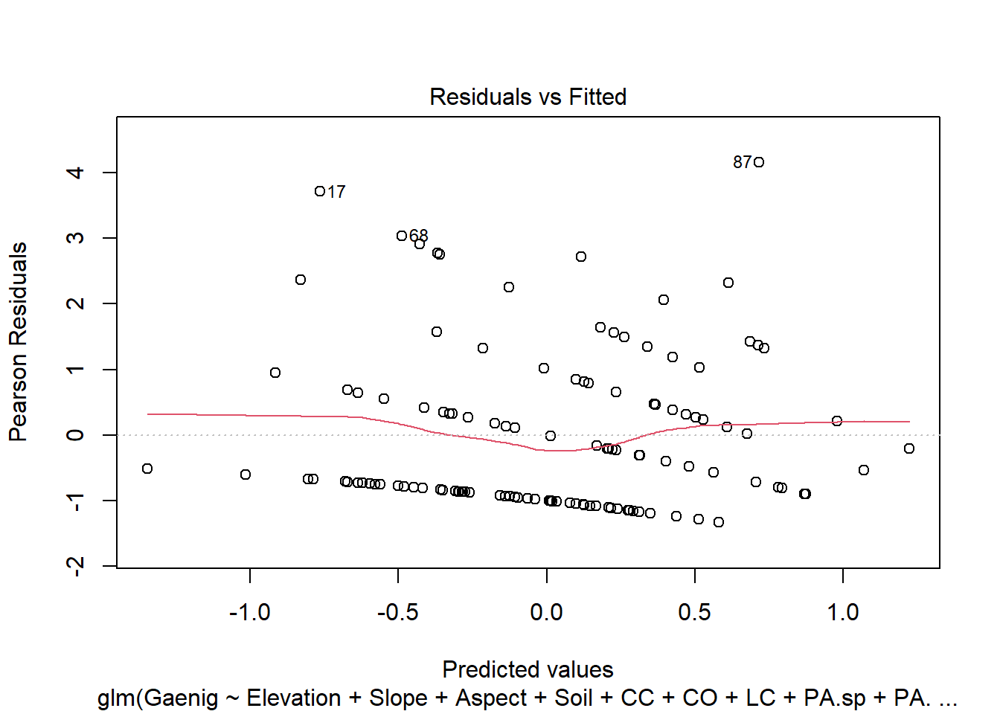
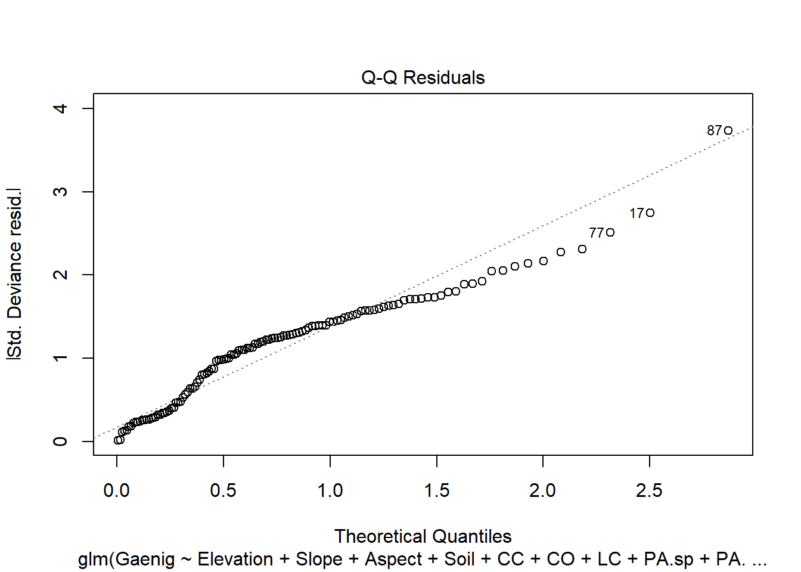
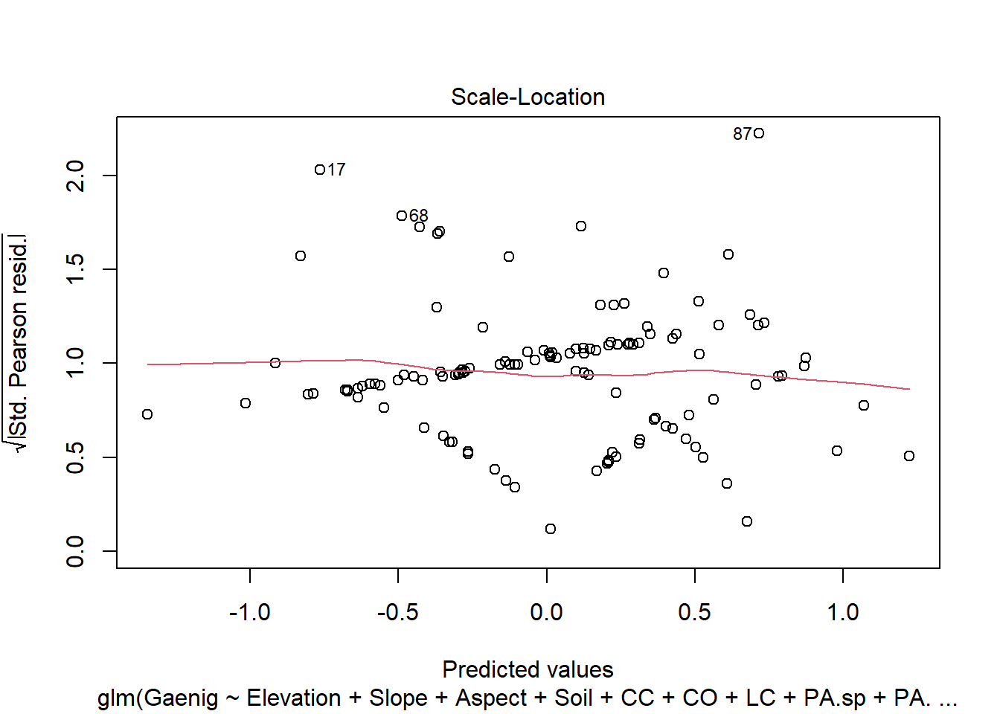
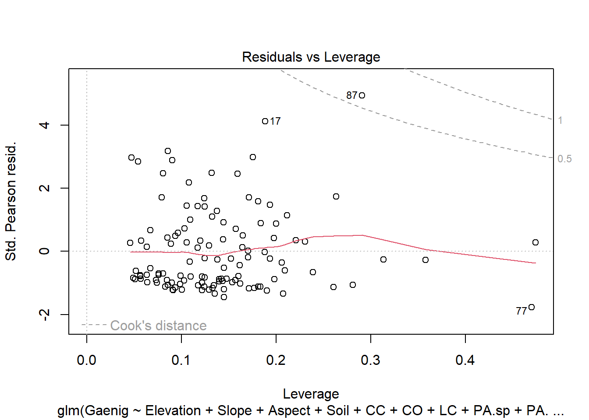
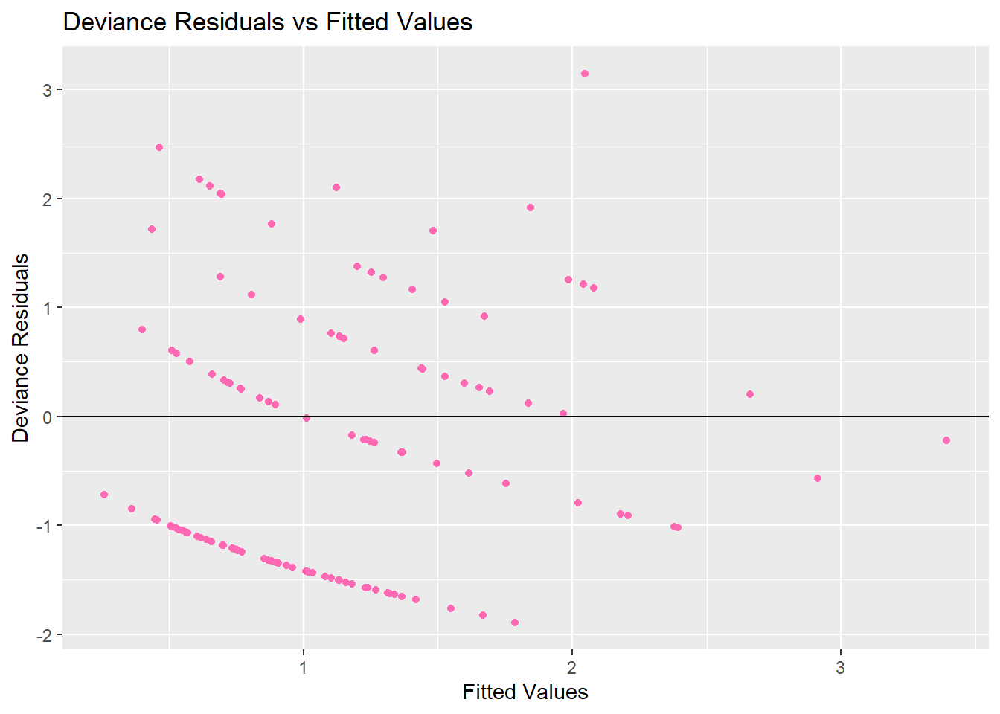
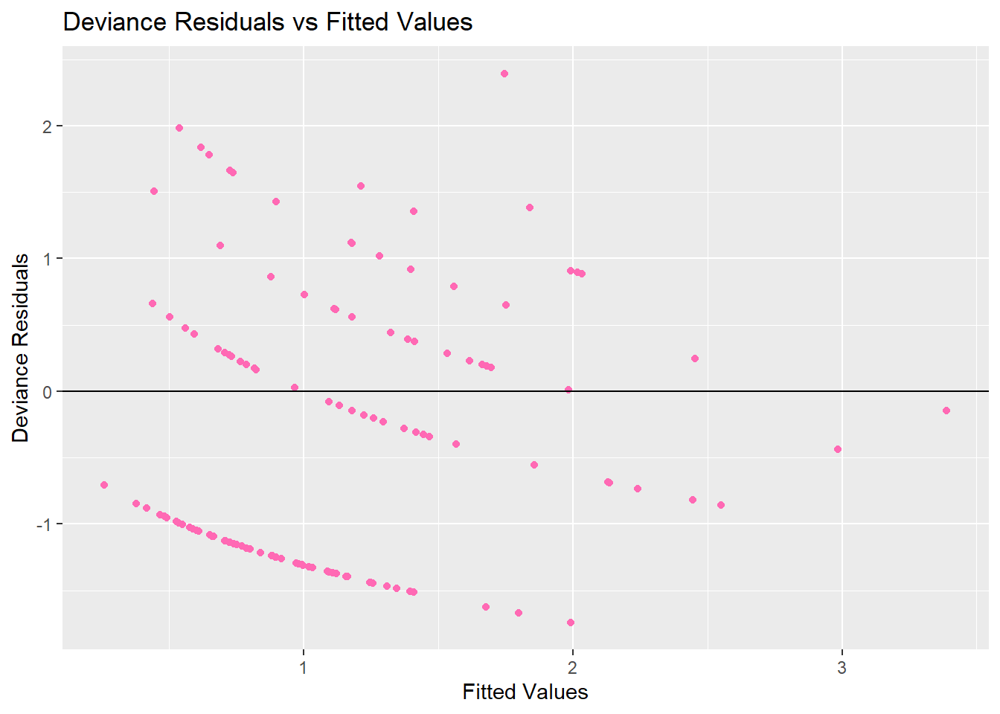

# Load data
snails <- read.csv("C:/Users/vadre/Downloads/snails(1).csv")
#Converting categorical variables as factor variables
snails$Aspect [ snails$Aspect ==6]=5
snails$Aspect [ snails$Aspect ==2]=1
snails$Aspect <- as.factor ( snails$Aspect )
cat.id <- which ( colnames ( snails ) %in% c("Aspect","Soil","CC","LC"))
snails [ ,cat.id ] <- lapply ( snails [, cat.id ],as.factor )
#creating Dummy Variables
Asp1 <- ifelse(snails$Aspect == 1, 1, 0)
Asp5 <- ifelse(snails$Aspect == 5, 1, 0)
Asp7 <- ifelse(snails$Aspect == 7, 1, 0)
Asp8 <- ifelse(snails$Aspect == 8, 1, 0)STAT-HW-7
#train test
set.seed(123457)
train.prop <- 0.80
trnset <-
sort(sample(1:nrow(snails), ceiling(nrow(snails) * train.prop)))
# create the training and test sets
train_data <- snails[trnset, ]
test_data <- snails[-trnset, ]1 (a) Poisson log linear
#WITHOUT TRAIN DATA
g.pf <- glm(Gaenig~Elevation+Slope+Aspect+Soil+CC+CO+LC+PA.sp+PA.other,
family='poisson', data=snails)
summary(g.pf)
Call:
glm(formula = Gaenig ~ Elevation + Slope + Aspect + Soil + CC +
CO + LC + PA.sp + PA.other, family = "poisson", data = snails)
Coefficients:
Estimate Std. Error z value Pr(>|z|)
(Intercept) -0.830443 2.934288 -0.283 0.7772
Elevation 0.004906 0.007390 0.664 0.5068
Slope -0.008925 0.011219 -0.796 0.4263
Aspect5 -0.353547 0.328964 -1.075 0.2825
Aspect7 -0.527808 0.275996 -1.912 0.0558 .
Aspect8 -0.231715 0.238424 -0.972 0.3311
Soil4 -0.490650 0.246440 -1.991 0.0465 *
Soil6 -0.369301 0.588492 -0.628 0.5303
CC2 -0.380212 0.284753 -1.335 0.1818
CC3 -0.158227 0.218619 -0.724 0.4692
CO -0.043589 0.055227 -0.789 0.4300
LC2 0.137842 0.280940 0.491 0.6237
LC3 0.008686 0.287950 0.030 0.9759
LC4 0.157189 0.309770 0.507 0.6118
LC5 0.165131 0.447720 0.369 0.7123
PA.sp 0.015961 0.013422 1.189 0.2344
PA.other -0.010858 0.005314 -2.043 0.0410 *
---
Signif. codes: 0 '***' 0.001 '**' 0.01 '*' 0.05 '.' 0.1 ' ' 1
(Dispersion parameter for poisson family taken to be 1)
Null deviance: 248.01 on 150 degrees of freedom
Residual deviance: 220.34 on 134 degrees of freedom
AIC: 459.83
Number of Fisher Scoring iterations: 6Interpretation:
Coefficients:
Soil4(p = 0.0465): The coefficient of -0.4906 implies that, holding all other variables constant, being inSoil4is associated with a decrease in the log count ofGaenigby about 0.491.PA.other(p = 0.0410): The negative coefficient (-0.010858) suggests that asPA.otherincreases by one unit, the log count ofGaenigis expected to decrease by about 0.0109, holding all else constant.
Deviance:
Given the null deviance as \(248.01\) and Residual Deviance as \(220.34\) - the residual deviance is significantly lower than the null deviance, it suggests that adding the predictors into the model has improved its explanatory power.
Fitting Null Model
#WITHOUT TRAIN DATA
g.pn <- glm(Gaenig~1,
family='poisson', data=snails)
summary(g.pn)
Call:
glm(formula = Gaenig ~ 1, family = "poisson", data = snails)
Coefficients:
Estimate Std. Error z value Pr(>|z|)
(Intercept) 0.08259 0.07809 1.058 0.29
(Dispersion parameter for poisson family taken to be 1)
Null deviance: 248.01 on 150 degrees of freedom
Residual deviance: 248.01 on 150 degrees of freedom
AIC: 455.51
Number of Fisher Scoring iterations: 5Fitting Model to Train Data
snail.pf <- glm(Gaenig~Elevation+Slope+Aspect+Soil+CC+CO+LC+PA.sp+PA.other,
family='poisson', data=train_data)
summary(snail.pf)
Call:
glm(formula = Gaenig ~ Elevation + Slope + Aspect + Soil + CC +
CO + LC + PA.sp + PA.other, family = "poisson", data = train_data)
Coefficients:
Estimate Std. Error z value Pr(>|z|)
(Intercept) 0.433161 3.417118 0.127 0.89913
Elevation 0.002851 0.008574 0.333 0.73947
Slope -0.007304 0.011597 -0.630 0.52881
Aspect5 -0.373324 0.358521 -1.041 0.29774
Aspect7 -0.504974 0.303390 -1.664 0.09602 .
Aspect8 -0.355122 0.250721 -1.416 0.15666
Soil4 -0.946090 0.322681 -2.932 0.00337 **
Soil6 -0.723771 0.610738 -1.185 0.23599
CC2 -0.354286 0.316442 -1.120 0.26289
CC3 0.025263 0.252329 0.100 0.92025
CO -0.115196 0.064217 -1.794 0.07284 .
LC2 0.075579 0.304032 0.249 0.80368
LC3 -0.241558 0.318611 -0.758 0.44836
LC4 0.054934 0.332660 0.165 0.86884
LC5 -0.037878 0.481135 -0.079 0.93725
PA.sp 0.009332 0.016399 0.569 0.56931
PA.other -0.011724 0.005824 -2.013 0.04412 *
---
Signif. codes: 0 '***' 0.001 '**' 0.01 '*' 0.05 '.' 0.1 ' ' 1
(Dispersion parameter for poisson family taken to be 1)
Null deviance: 205.68 on 120 degrees of freedom
Residual deviance: 174.65 on 104 degrees of freedom
AIC: 378.72
Number of Fisher Scoring iterations: 6#checking assumptions
plot(snail.pf)



Poissons Assumptions seem to be violated due to the curvature, indicating non-linearity and a pattern in the residual plot. There also seems to be a deviation from normality.
Model Coefficients
Elevation: The estimated coefficient is 0.002851 with a standard error (SE) of 0.008574 This means that for a one-unit increase in elevation, the expected log count \(\log\) \(\lambda_i\) increases by 0.002851. Exponentiating this value, indicates that the multiplicative effect on the expected count lambda for a unit increase in elevation is 1.002856.
Slope: The estimated coefficient is -0.007304 with an SE of 0.011597. Exponentiating the coefficient, shows that the multiplicative effect on the expected count due to a unit increase in slope is 0.9927240.
Soil4: The estimated coefficient is -0.946090 with a p-value that is significant at the 0.01 level. Exponentiating this, 0.388519, shows the multiplicative effect on the expected count for Soil4 compared to the baseline Soil1.
Note that many of the p-values are above 0.05, which usually implies that the variable may not be statistically significant in predicting the outcome variable (Gaenig) at the 0.05 level. However, Soil4 and PA.other appear to be statistically significant predictors in the model.
Deviance:
Residual Deviance \(174.65\) is \(<\) Null Deviance \(205.68\) indicating the full model is a better model.
Test for Model Adequacy
- Chisq and Deviance
with(snail.pf, cbind(deviance = deviance, df = df.residual,
p = pchisq(deviance, df.residual, lower.tail=FALSE))) deviance df p
[1,] 174.654 104 1.771981e-05\(H_0\): data prefers the full model versus.
\(H_1\): data does not prefer the full model.
The observed chi-squared test statistic is \(174.654\) with \(n-p =104\) d.f. and the \(p\)-value is very small. We reject \(H_0\), and conclude that the fitted model is inadequate.
library(ggplot2)
# Create a data frame for plotting
plot_data <- data.frame(Fitted = fitted(snail.pf),
DevResid = resid(snail.pf, type = "deviance"))
# Create the plot
ggplot(plot_data, aes(x = Fitted, y = DevResid)) +
geom_point(col="hotpink", pch=16) +
geom_hline(yintercept = 0, color = "black") +
ggtitle("Deviance Residuals vs Fitted Values") +
xlab("Fitted Values") +
ylab("Deviance Residuals")
The plot suggests linearity, but the pattern could indicate unequal variances.
- Null VS Full
snail.pn <- glm(Gaenig~1,
family='poisson', data=train_data)
summary(snail.pn)
Call:
glm(formula = Gaenig ~ 1, family = "poisson", data = train_data)
Coefficients:
Estimate Std. Error z value Pr(>|z|)
(Intercept) 0.13868 0.08482 1.635 0.102
(Dispersion parameter for poisson family taken to be 1)
Null deviance: 205.68 on 120 degrees of freedom
Residual deviance: 205.68 on 120 degrees of freedom
AIC: 377.75
Number of Fisher Scoring iterations: 5\[ \mbox{Extra d.f. = d.f.(null deviance) - d.f.(fitted model residual deviance)} \]
with(snail.pf, cbind(deviance = null.deviance-deviance,
df = df.null-df.residual,
p = pchisq(null.deviance-deviance,
df.null-df.residual,
lower.tail=FALSE))) deviance df p
[1,] 31.02666 16 0.01335116From the above output,
extra deviance = 31.02666
extra d.f. = 16
\(p\)-value (from the chi-squared test) = 0.01335116
The significantly small \(p\)-value shows that the data rejects \(H_0\) (null model) and prefers the full fitted model (model under \(H_1\)).
Dispersion
(disp.est <- snail.pf$deviance/snail.pf$df.residual)[1] 1.679366A dispersion parameter greater than 1 indicates overdispersion
Information Criterion
AIC(snail.pn, snail.pf) df AIC
snail.pn 1 377.7470
snail.pf 17 378.7204BIC(snail.pn, snail.pf) df BIC
snail.pn 1 380.5428
snail.pf 17 426.2488The smaller the AIC indicates the better model, based on the above output, it is safe to say that the full model is better than the null.
The same applies for BIC which is a much stricter method.
In-sample MAD
# Get the fitted values (lambda hat) on the training data
lambdahat_train <- predict(snail.pf, type = "response")
# Calculate in-sample MAD on training data
n1 <- nrow(train_data) # Number of observations in the training data
mad_train <- (1/n1) * sum(abs(train_data$Gaenig - lambdahat_train))
mad_train[1] 0.9860363Out-of-sample MAD
# Get the predicted values (lambda hat) on the test data
lambdahat_test <- predict(snail.pf, newdata = test_data, type = "response")
# Calculate out-of-sample MAD on test data
n2 <- nrow(test_data) # Number of observations in the test data
mad_test <- (1/n2) * sum(abs(test_data$Gaenig - lambdahat_test))
mad_test[1] 1.037381Since both the in-sample and out-of-sample MADs are fairly close to each other and relatively low, it suggests that the model is doing a reasonable job of fitting and generalizing.
1 (b) Quasi-Poisson log linear Model
snail.qpf <- glm(Gaenig~Elevation+Slope+Aspect+Soil+CC+LC+CO+PA.sp+PA.other,
family=quasipoisson,data=train_data)
summary(snail.qpf)
Call:
glm(formula = Gaenig ~ Elevation + Slope + Aspect + Soil + CC +
LC + CO + PA.sp + PA.other, family = quasipoisson, data = train_data)
Coefficients:
Estimate Std. Error t value Pr(>|t|)
(Intercept) 0.433161 4.416055 0.098 0.9221
Elevation 0.002851 0.011080 0.257 0.7974
Slope -0.007304 0.014988 -0.487 0.6270
Aspect5 -0.373324 0.463328 -0.806 0.4222
Aspect7 -0.504974 0.392081 -1.288 0.2006
Aspect8 -0.355122 0.324015 -1.096 0.2756
Soil4 -0.946090 0.417012 -2.269 0.0253 *
Soil6 -0.723771 0.789277 -0.917 0.3613
CC2 -0.354286 0.408948 -0.866 0.3883
CC3 0.025263 0.326093 0.077 0.9384
LC2 0.075579 0.392911 0.192 0.8478
LC3 -0.241558 0.411752 -0.587 0.5587
LC4 0.054934 0.429908 0.128 0.8986
LC5 -0.037878 0.621787 -0.061 0.9515
CO -0.115196 0.082990 -1.388 0.1681
PA.sp 0.009332 0.021193 0.440 0.6606
PA.other -0.011724 0.007527 -1.558 0.1224
---
Signif. codes: 0 '***' 0.001 '**' 0.01 '*' 0.05 '.' 0.1 ' ' 1
(Dispersion parameter for quasipoisson family taken to be 1.670125)
Null deviance: 205.68 on 120 degrees of freedom
Residual deviance: 174.65 on 104 degrees of freedom
AIC: NA
Number of Fisher Scoring iterations: 6Model Coefficients
Soil4: This variable is significant at the 0.05 level with a p-value of 0.0253. The estimate is -0.946090, meaning that changing from the baseline soil type (Soil1) to Soil4 results in a decrease in the expected log-count of Gaenig by about 0.946090. The multiplicative effect on the expected count would be exp 0.388
For every unit increase in elevation, the log count of Gaenig increases by 0.002851.
For every unit increase in slope, the log count of Gaenig decreases by 0.007304.
The reduction in deviance from 205.68 to 174.65 suggests the model explains some variability in Gaenig.
Overall, Soil4 again appears to be a significant predictor for the dependent variable Gaenig. Most of the other variables have high p-values, suggesting they are not statistically significant in this model. The model seems to have a decent fit based on the deviances
Test for Model Adequacy
- Chisq & Deviance Residual Plots
with(snail.qpf, cbind(deviance = deviance, df = df.residual,
p = pchisq(deviance, df.residual, lower.tail=FALSE))) deviance df p
[1,] 174.654 104 1.771981e-05\(H_0\): data prefers the full model versus.
\(H_1\): data does not prefer the full model.
The observed chi-squared test statistic is \(174.654\) with \(n-p =104\) d.f. and the \(p\)-value is very small. We reject \(H_0\), and conclude that the fitted model is inadequate.
library(ggplot2)
# Create a data frame for plotting
plot_data <- data.frame(Fitted = fitted(snail.qpf),
DevResid = resid(snail.qpf, type = "deviance"))
# Create the plot
ggplot(plot_data, aes(x = Fitted, y = DevResid)) +
geom_point(col="hotpink", pch=16) +
geom_hline(yintercept = 0, color = "black") +
ggtitle("Deviance Residuals vs Fitted Values") +
xlab("Fitted Values") +
ylab("Deviance Residuals")
While the spread of the residuals seems relatively constant, there is a visible pattern which suggests that the model may not have captured some non-linearity in the data.
- Null VS Full
snail.qpn <- glm(Gaenig~1,
family=quasipoisson, data=train_data)
summary(snail.qpn)
Call:
glm(formula = Gaenig ~ 1, family = quasipoisson, data = train_data)
Coefficients:
Estimate Std. Error t value Pr(>|t|)
(Intercept) 0.1387 0.1103 1.257 0.211
(Dispersion parameter for quasipoisson family taken to be 1.69264)
Null deviance: 205.68 on 120 degrees of freedom
Residual deviance: 205.68 on 120 degrees of freedom
AIC: NA
Number of Fisher Scoring iterations: 5Information Criterion
AIC(snail.qpn, snail.qpf) df AIC
snail.qpn 2 NA
snail.qpf 18 NABIC(snail.qpn, snail.qpf) df BIC
snail.qpn 2 NA
snail.qpf 18 NAThe fact that the AIC values are NA (Not Available) for both models/variables might suggest that the models did not converge.
Dispersion Parameter
(disp.est <- snail.qpf$deviance/snail.qpf$df.residual)[1] 1.679366A dispersion parameter greater than 1 indicates overdispersion
In-Sample MAD
# Get the fitted values (lambda hat) on the training data
lambdahat_train <- predict(snail.qpf, type = "response")
# Calculate in-sample MAD on training data
n1 <- nrow(train_data) # Number of observations in the training data
mad_trai <- (1/n1) * sum(abs(train_data$Gaenig - lambdahat_train))
mad_trai[1] 0.9860363The average magnitude of the errors is 0.986.
Out-of-Sample MAD
# Get the predicted values (lambda hat) on the test data
lambdahat_test <- predict(snail.pf, newdata = test_data, type = "response")
# Calculate out-of-sample MAD on test data
n2 <- nrow(test_data) # Number of observations in the test data
mad_tes <- (1/n2) * sum(abs(test_data$Gaenig - lambdahat_test))
mad_tes[1] 1.037381The average magnitude of the errors is 1.037. Since both the in-sample and out-of-sample MADs are fairly close to each other and relatively low, it suggests that the model is doing a reasonable job of fitting and generalizing.
1 (C) Negative Binomial Log Linear Model
library(MASS)
Attaching package: 'MASS'The following object is masked _by_ '.GlobalEnv':
snailssnail.nbf <- glm.nb(Gaenig~Elevation+Slope+Aspect+Soil+CC+LC+CO+PA.sp+PA.other,data=train_data)
summary(snail.nbf)
Call:
glm.nb(formula = Gaenig ~ Elevation + Slope + Aspect + Soil +
CC + LC + CO + PA.sp + PA.other, data = train_data, init.theta = 2.871689284,
link = log)
Coefficients:
Estimate Std. Error z value Pr(>|z|)
(Intercept) -0.161328 4.102093 -0.039 0.9686
Elevation 0.004123 0.010317 0.400 0.6894
Slope -0.006415 0.013688 -0.469 0.6393
Aspect5 -0.354802 0.433453 -0.819 0.4130
Aspect7 -0.519563 0.367129 -1.415 0.1570
Aspect8 -0.374963 0.312013 -1.202 0.2295
Soil4 -0.911459 0.375280 -2.429 0.0152 *
Soil6 -0.535102 0.707389 -0.756 0.4494
CC2 -0.382547 0.378191 -1.012 0.3118
CC3 -0.051661 0.308611 -0.167 0.8671
LC2 0.184564 0.371712 0.497 0.6195
LC3 -0.172446 0.388932 -0.443 0.6575
LC4 0.135938 0.406807 0.334 0.7383
LC5 0.045341 0.583910 0.078 0.9381
CO -0.095995 0.076460 -1.255 0.2093
PA.sp 0.008536 0.019819 0.431 0.6667
PA.other -0.012056 0.006660 -1.810 0.0703 .
---
Signif. codes: 0 '***' 0.001 '**' 0.01 '*' 0.05 '.' 0.1 ' ' 1
(Dispersion parameter for Negative Binomial(2.8717) family taken to be 1)
Null deviance: 153.75 on 120 degrees of freedom
Residual deviance: 132.03 on 104 degrees of freedom
AIC: 374.27
Number of Fisher Scoring iterations: 1
Theta: 2.87
Std. Err.: 1.50
2 x log-likelihood: -338.266 Model Coefficients
Soil4 has an estimate of -0.911459 and a p-value of 0.0152, making it significant at the 0.05 level. This means, keeping all other variables constant, changing from the baseline soil type Soil1 to Soil4 would result in a decrease in the expected log-count of Gaenig by about 0.911459. The multiplicative effect on the expected count would be 0.402.
PA.other has an estimate of -0.012056 and a p-value of 0.0703, making it borderline significant at the 0.1 level. This means for a one-unit increase in PA.other, the expected log-count of Gaenig decreases by 0.012056, and the multiplicative effect is 0.988
Here, only 1 iteration was needed, suggesting the model converged quickly.
Residual Deviance \(132.03\) is \(<\) Null Deviance \(153.75\) indicating the full model is a better model.
This is the log-likelihood of the fitted model, \(-338.266\) is often used for model comparison; lower values (closer to zero) generally suggest a better fit to the observed data.
Test for Model Adequacy
- Chisq and Deviance Residual
with(snail.nbf, cbind(deviance = deviance, df = df.residual,
p = pchisq(deviance, df.residual, lower.tail=FALSE))) deviance df p
[1,] 132.0283 104 0.03308387\(H_0\): data prefers the full model versus.
\(H_1\): data does not prefer the full model.
The observed chi-squared test statistic is \(132.0283\) with \(n-p =104\) d.f. and the \(p\)-value is small. We reject \(H_0\), and conclude that the fitted model is inadequate.
library(ggplot2)
# Create a data frame for plotting
plot_data <- data.frame(Fitted = fitted(snail.nbf),
DevResid = resid(snail.nbf, type = "deviance"))
# Create the plot
ggplot(plot_data, aes(x = Fitted, y = DevResid)) +
geom_point(col="hotpink", pch=16) +
geom_hline(yintercept = 0, color = "black") +
ggtitle("Deviance Residuals vs Fitted Values") +
xlab("Fitted Values") +
ylab("Deviance Residuals")
- Null VS Full
snail.nbn <- glm.nb(Gaenig~1
, data=train_data)
summary(snail.nbn)
Call:
glm.nb(formula = Gaenig ~ 1, data = train_data, init.theta = 1.515637598,
link = log)
Coefficients:
Estimate Std. Error z value Pr(>|z|)
(Intercept) 0.1387 0.1125 1.233 0.218
(Dispersion parameter for Negative Binomial(1.5156) family taken to be 1)
Null deviance: 129.13 on 120 degrees of freedom
Residual deviance: 129.13 on 120 degrees of freedom
AIC: 361.63
Number of Fisher Scoring iterations: 1
Theta: 1.516
Std. Err.: 0.546
2 x log-likelihood: -357.628 an.nb <- anova(snail.nbn, snail.nbf, test="Chisq")
an.nb$'Pr(Chi)'[1] NA 0.2503397The predictors dont seem useful for explaining the counts as the very high p-value shows.
Dispersion Parameter
disp <- snail.nbf$theta
disp[1] 2.871689A dispersion parameter greater than 1 indicates overdispersion
Information Criterion
AIC(snail.nbn, snail.nbf) df AIC
snail.nbn 2 361.6281
snail.nbf 18 374.2662BIC(snail.nbn, snail.nbf) df BIC
snail.nbn 2 367.2197
snail.nbf 18 424.5904As both AIC and BIC are larger for the full model, it suggests it isn’t the better model.
In-Sample MAD
ins <- predict(snail.nbf, type = "response")
sum(abs(train_data$Gaenig-ins))/n1[1] 0.9921456The average magnitude of the errors is 0.9921.
Out-of-Sample MAD
tp <- predict(snail.nbf, newdata = test_data, type = "response")
sum(abs(test_data$Gaenig-tp))/n2[1] 1.019177The average magnitude of the errors is 1.019177. Since both the in-sample and out-of-sample MADs are fairly close to each other and relatively low, it suggests that the model is doing a reasonable job of fitting and generalizing.
Reduced Model
Taking into account a reduced model that only contains the predictors Soil4 and possibly PA.other (because it is marginally significant) based on the significance thresholds.
reduced_model <- glm.nb(Gaenig ~ Soil + PA.other, data = train_data, link = log)
summary(reduced_model)
Call:
glm.nb(formula = Gaenig ~ Soil + PA.other, data = train_data,
link = log, init.theta = 1.930765404)
Coefficients:
Estimate Std. Error z value Pr(>|z|)
(Intercept) 0.548735 0.173339 3.166 0.00155 **
Soil4 -0.616229 0.339388 -1.816 0.06941 .
Soil6 0.232596 0.598710 0.388 0.69765
PA.other -0.016230 0.006488 -2.502 0.01236 *
---
Signif. codes: 0 '***' 0.001 '**' 0.01 '*' 0.05 '.' 0.1 ' ' 1
(Dispersion parameter for Negative Binomial(1.9308) family taken to be 1)
Null deviance: 138.96 on 120 degrees of freedom
Residual deviance: 128.99 on 117 degrees of freedom
AIC: 358.06
Number of Fisher Scoring iterations: 1
Theta: 1.931
Std. Err.: 0.786
2 x log-likelihood: -348.064 Interpretation
Lower AIC values are generally better, suggesting that the reduced model is a better fit for the data when considering both goodness-of-fit and complexity.The reduced model has a lower residual deviance and more degrees of freedom, which usually indicates a better fit.Both thetas are not too close to zero, which is good because a theta near zero would indicate overdispersion. The reduced model appears to be a better choice: it’s simpler, has a lower AIC, and retains the predictors that were significant or marginally significant in the original model.
PREFERRED MODEL
When choosing a model, we choose a negative binomial log linear model when our data is overdispersed, as proved above and when the poisson’s assumptions have been violated. As observed from the plots, the assumptions have not been met, making model c preferrable.
Moreover, when comparing information criterion, the AIC and BIC of model C is less than that of model A indicating it to be a better choice of model to predict and fit the data.
Smaller deviance is a good choice and model C has the smallest residual deviances as shown from the chi.sq test with a value of \(132\)
The Negative Binomial model has the lowest in-sample and out-of-sample MAD (0.9921456 in-sample and 1.019177 out-of-sample).
The Negative Binomial model appears to be the best option based on the aforementioned factors.
There is a significant improvement in the reduced negative binomial model from it’s original again indicating that model c is the preferred model.